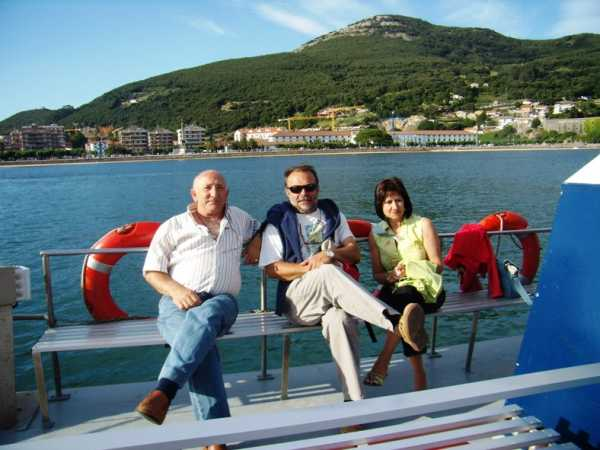

Un paseo en la canoa que hace el trayecto de Santoña a la Playa del Puntal de Laredo, tras una agradable comida dos viejos camaradas con sus respectivas esposas. En la imagen, Manolo Ruiz Miera, Antonio Serrano Baena y Pilar, esposa de Manolo. Angelines, esposa de Antonio estaba tras la cámara...
 |